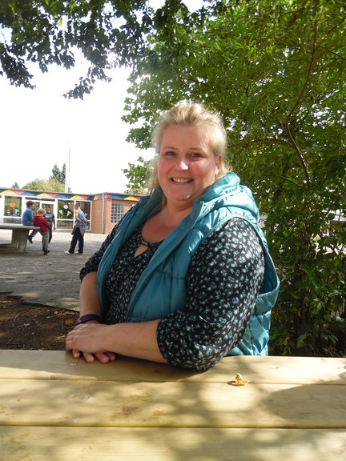

Im Starterkurs sind nur Kinder aus der ersten Klasse. Der Kurs wird von Frau Weidemann geleitet. Sie spielen, basteln und singen Lieder. Sie hören Geschichten. Manchmal gehen sie in die Schulküche zum Backen.
Zu Beginn des Kurses machen sie einen Sitzkreis. Dort besprechen sie, was sie im Kurs machen, spielen Spiele oder sammeln Ideen für andere Kurstage. Sie spielen auch viel draußen.
Im Sommer ist eine Zirkusvorstellung geplant.
Text von Alina und Anastasia
Foto von Tatjana